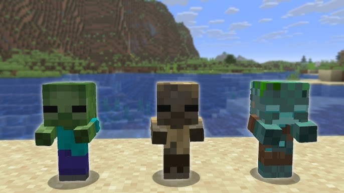
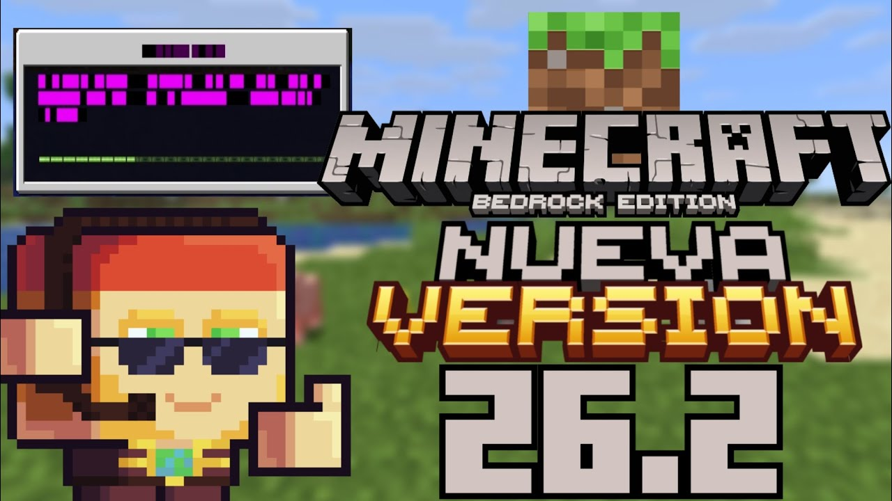

Nexial
Actualizaciones y Granjas
Todo lo importante de Minecraft Java y Bedrock en una sola página.
Minecraft Java Edition
Último Lanzamiento: 1.21.11

Fecha: 9/12/2025
La actualización 1.21.11 de Minecraft, llamada “Mounts of Mayhem”, se centra en la exploración acuática y nuevas monturas. Introduce el Nautilus, un mob submarino que los jugadores pueden domar y montar para moverse rápidamente bajo el agua, junto a su versión hostil, el Zombie Nautilus. Además, añade mejoras como la Nautilus Armor y la Netherite Horse Armor, y una nueva arma llamada Spear, diseñada para un combate más dinámico. La versión también optimiza animaciones, corrige errores en redstone submarino y en la generación de estructuras oceánicas, haciendo que la exploración y el combate bajo el agua sean más fluidos y entretenidos, al mismo tiempo que amplía las posibilidades de aventura y supervivencia en los océanos del juego.
Última Snapshot: 25w07a

Snapshot experimental que añade mejoras técnicas al inventario, cambios en automatización y nuevas optimizaciones internas. Preparando futuras mecánicas para redstone y exploración.
Minecraft Bedrock Edition
Último Lanzamiento: 1.21.50

Mejora el rendimiento en consolas y móviles, añade cambios de paridad con Java Edition y optimiza generación de estructuras. Incluye mejoras en multijugador.
Última Beta: 1.21.60.20

Beta centrada en nuevas funciones técnicas, mejoras en automatización y ajustes de mobs. Se están probando cambios en mecánicas futuras.